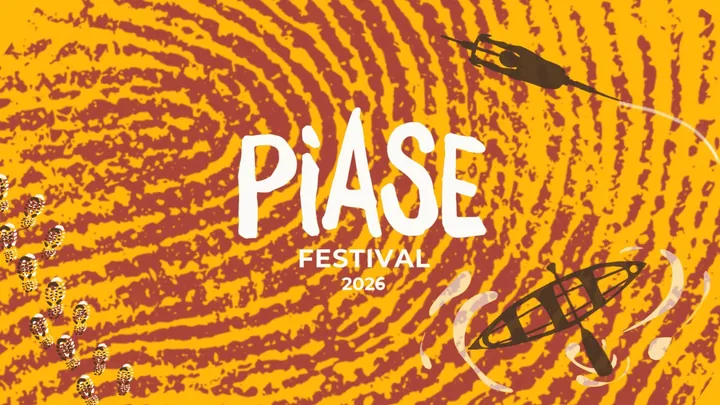

da dom 6 set a dom 18 ott
PIASE Festival 2026
Il PIASE FESTIVAL 2026 si svolge tra settembre e ottobre con un calendario di iniziative distribuite nei Comuni di Bovolone, Casaleone, Cerea, Concamarise, Gazzo Veronese, Isola della Scala, Isola Rizza, Legnago, Minerbe, Nogara, Oppeano, Palù, Ronco all’Adige, Roverchiara…
 Indicazioni
Indicazioni
- Costi e prenotazioni
- Costo non indicato · Prenotazione non indicata
- Programma
- Programma da verificare. Apri la fonte ufficiale per orari e possibili aggiornamenti.
- In caso di maltempo
- Nessuna indicazione specifica pubblicata.
- Note
- Acquisito automaticamente dalla fonte.
L’EVENTO
Descrizione completa
Il PIASE FESTIVAL 2026 si svolge tra settembre e ottobre con un calendario di iniziative distribuite nei Comuni di Bovolone, Casaleone, Cerea, Concamarise, Gazzo Veronese, Isola della Scala, Isola Rizza, Legnago, Minerbe, Nogara, Oppeano, Palù, Ronco all’Adige, Roverchiara, Salizzole, San Pietro di Morubio, Sanguinetto, Sommacampagna, Sorgà, Terrazzo, Trevenzuolo, Vigasio, Villa Bartolomea e Zevio.
La quarta edizione è dedicata ai temi dell’incontro, del movimento e del territorio, sviluppati attraverso attività rivolte alla conoscenza del paesaggio, della cultura e delle comunità locali.
Il programma comprende incontri e approfondimenti, percorsi a piedi e in bicicletta, esperienze lungo le vie d’acqua, laboratori, degustazioni, spettacoli e altre attività. Le proposte mettono in relazione il patrimonio naturale e culturale della Pianura Veronese con le realtà che ne fanno parte, favorendo una fruizione del territorio basata sulla mobilità lenta e sulla partecipazione.
IL PROGRAMMA
Programma e orari
Appuntamenti raccolti dalle fonti elencate. Dove manca un orario, non è ancora disponibile in questa scheda.
Programma pubblicato
- 2026-09-06 — 2026-09-06 · 09:00:00
- 2026-09-11 — 2026-09-11 · 18:30:00
- 2026-09-12 — 2026-09-12 · 15:00:00
- 2026-09-13 — 2026-09-13 · 09:00:00
- 2026-09-18 — 2026-09-18 · 18:30:00
- 2026-09-19 — 2026-09-19 · 15:00:00
- 2026-09-20 — 2026-09-20 · 09:00:00
- 2026-09-25 — 2026-09-25 · 18:45:00
- 2026-09-26 — 2026-09-26 · 15:00:00
- 2026-09-27 — 2026-09-27 · 07:30:00
- 2026-09-27 — 2026-09-27 · 09:30:00
- 2026-10-02 — 2026-10-02 · 18:30:00
- 2026-10-03 — 2026-10-03 · 15:00:00
- 2026-10-04 — 2026-10-04 · 09:00:00
- 2026-10-09 — 2026-10-09 · 18:30:00
- 2026-10-10 — 2026-10-10 · 15:00:00
- 2026-10-11 — 2026-10-11 · 09:00:00
- 2026-10-16 — 2026-10-16 · 18:30:00
- 2026-10-17 — 2026-10-17 · 14:30:00
- 2026-10-18 — 2026-10-18 · 09:00:00
INFORMAZIONI UTILI
Prima di partire
- Controllare la fonte prima di partire.
ORGANIZZAZIONE